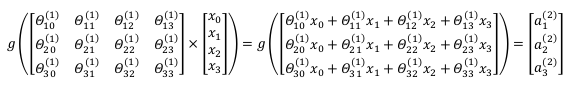
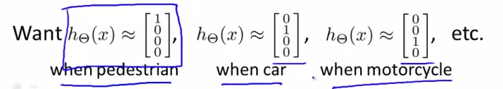

模型
神经网络模型建立在很多神经元之上，每一个神经元又是一个个学习模型。这些神经元（也叫激活单元，activation unit）采纳一些特征作为输出，并且根据本身的模型提供一个输出。下图是一个以逻辑回归模型作为自身学习模型的神经元示例，在神经网络中，参数（$\theta$）又可被成为权重（weight）。
我们设计出了类似于神经元的神经网络，效果如下：

其中$x_1$, $x_2$, $x_3$是输入单元（input units），我们将原始数据输入给它们。
$a_1$, $a_2$, $a_3$是中间单元，它们负责将数据进行处理，然后呈递到下一层。
最后是输出单元，它负责计算${h_\theta}\left( x \right)$。
神经网络模型是许多逻辑单元按照不同层级组织起来的网络，每一层的输出变量都是下一层的输入变量。下图为一个3层的神经网络，第一层成为输入层（Input Layer），最后一层称为输出层（Output Layer），中间一层成为隐藏层（Hidden Layers）。我们为每一层都增加一个偏差单位（bias unit）：

下面引入一些标记法来帮助描述模型：
$a_{i}^{\left( j \right)}$ 代表第$j$ 层的第 $i$ 个激活单元。
${\Theta }^{\left( j \right)}$代表从第 $j$ 层映射到第$ j+1$ 层时的权重的矩阵，例如${\Theta }^{\left( 1 \right)} $代表从第一层(layer 1)映射到第二层(layer 2)的权重的矩阵。
权重矩阵其尺寸为：以第 $j+1$层的激活单元数量为行数，以第 $j$ 层的激活单元数加一为列数的矩阵。例如：上图所示的神经网络中${\theta }^{\left( 1 \right)} $的尺寸为 3*4。尺寸（$s_{j+1}\cross (s_j+1)$）
向量表示
相对于使用循环来编码，利用向量化的方法会使得计算更为简便。以上面的神经网络为例，试着计算第二层的值：


我们令 ${z}^{\left( 2 \right)}={\theta }^{\left( 1 \right)}x$，则 ${a}^{\left( 2 \right)}=g({z}^{\left( 2 \right)})$ ，计算后添加 $a_{0}^{\left( 2 \right)}=1$。 计算输出的值为：

我们令 ${z}^{\left( 3 \right)}={\theta }^{\left( 2 \right)}{a}^{\left( 2 \right)}$，则 $h_\theta(x)={a}^{\left( 3 \right)}=g({z}^{\left( 3 \right)})$。
这只是针对训练集中一个训练实例所进行的计算。如果我们要对整个训练集进行计算，我们需要将训练集特征矩阵进行转置，使得同一个实例的特征都在同一列里。即：
${z}^{\left( 2 \right)}={\Theta }^{\left( 1 \right)}\times {X}^{T} $
${a}^{\left( 2 \right)}=g({z}^{\left( 2 \right)})$
为了更好了了解Neuron Networks的工作原理，我们先把左半部分遮住：

右半部分其实就是以$a_0, a_1, a_2, a_3$, 按照Logistic Regression的方式输出$h_\theta(x)$：

其实神经网络就像是logistic regression，只不过我们把logistic regression中的输入向量$\left[ x_1\sim {x_3} \right]$ 变成了中间层的$\left[ a_1^{(2)}\sim a_3^{(2)} \right]$, 即: $h_\theta(x)=g\left( \Theta_0^{\left( 2 \right)}a_0^{\left( 2 \right)}+\Theta_1^{\left( 2 \right)}a_1^{\left( 2 \right)}+\Theta_{2}^{\left( 2 \right)}a_{2}^{\left( 2 \right)}+\Theta_{3}^{\left( 2 \right)}a_{3}^{\left( 2 \right)} \right)$
我们可以把$a_0, a_1, a_2, a_3$看成更为高级的特征值，也就是$x_0, x_1, x_2, x_3$的进化体，并且它们是由 $x$与$\theta$决定的，因为是梯度下降的，所以$a$是变化的，并且变得越来越厉害，所以这些更高级的特征值远比仅仅将 $x$次方厉害，也能更好的预测新数据。
这就是神经网络相比于逻辑回归和线性回归的优势。
多样本分类
当我们有不止两种分类时（也就是$y=1,2,3….$），比如以下这种情况，该怎么办？如果我们要训练一个神经网络算法来识别路人、汽车、摩托车和卡车，在输出层我们应该有4个值。例如，第一个值为1或0用于预测是否是行人，第二个值用于判断是否为汽车。
输入向量$x$有三个维度，两个中间层，输出层4个神经元分别用来表示4类，也就是每一个数据在输出层都会出现${\left[ a\text{ }b\text{ }c\text{ }d \right]}^{T} $，且$a,b,c,d$中仅有一个为1，表示当前类。下面是该神经网络的可能结构示例：


神经网络算法的输出结果为四种可能情形之一：

代价函数
引入一些新的符号：
- L: 神经网络的层数。上图L=4
- $s_l$: 第$l$层神经元的数量（不包含偏置单元）。上图$s_1=3,s_2=5 …S_L=4$
- K:输出单元数量，上图K=4
对于二分类，$S_L=1,K=1$
对于逻辑回归：
对于神经网络，在此基础上定义（把负号提出来了）：
这个看起来复杂很多的代价函数背后的思想还是一样的，我们希望通过代价函数来观察算法预测的结果与真实情况的误差有多大，唯一不同的是，对于每一行特征，我们都会给出$K$个预测，基本上我们可以利用循环，对每一行特征都预测$K$个不同结果，然后在利用循环在$K$个预测中选择可能性最高的一个，将其与$y$中的实际数据进行比较。
正则化的那一项只是排除了每一层$\theta_0$后，每一层的$\theta$ 矩阵的和。最里层的循环$j$循环所有的行（由$s_{l+1}$ 层的激活单元数决定），循环$i$则循环所有的列，由该层（$s_l$层）的激活单元数所决定。即：$h_\theta(x)$与真实值之间的距离为每个样本-每个类输出的加和，对参数进行regularization的bias项处理所有参数的平方和。
反向传播
为了求出$J(\Theta)$的最小值，需要求出$\frac{\partial}{\partial\Theta^{(l)}_{ij}\\}J\left(\Theta\right)$，
对于上面的神经网络，我们从最后一层的误差开始计算，误差是激活单元的预测（${a^{(4)} }$）与实际值（$y^k$）之间的误差，（$k=1:k$）。
我们用$\delta$来表示误差，则：$\delta^{(4)}=a^{(4)}-y$
其中 $g’(z^{(3)})$是 $S$ 形函数的导数，$g’(z^{(3)})=a^{(3)}\ast(1-a^{(3)})$。而$(θ^{(3)})^{T}\delta^{(4)}$则是权重导致的误差的和。
下一步是继续计算第二层的误差：
$ \delta^{(2)}=(\Theta^{(2)})^{T}\delta^{(3)}\ast g’(z^{(2)})$
因为第一层是输入变量，不存在误差。我们有了所有的误差的表达式后，便可以计算代价函数的偏导数了，假设$λ=0$，即我们不做任何正则化处理时有：
重要的是清楚地知道上面式子中上下标的含义：
$l$ 代表目前所计算的是第几层。
$j$ 代表目前计算层中的激活单元的下标，也将是下一层的第$j$个输入变量的下标。
$i$ 代表下一层中误差单元的下标，是受到权重矩阵中第$i$行影响的下一层中的误差单元的下标。
如果我们考虑正则化处理，并且我们的训练集是一个特征矩阵而非向量。在上面的特殊情况中，我们需要计算每一层的误差单元来计算代价函数的偏导数。在更为一般的情况中，我们同样需要计算每一层的误差单元，但是我们需要为整个训练集计算误差单元，此时的误差单元也是一个矩阵，我们用$\Delta^{(l)}_{ij}$来表示这个误差矩阵。第 $l$ 层的第 $i$ 个激活单元受到第 $j$ 个参数影响而导致的误差。
我们的算法表示为：

即首先用正向传播方法计算出每一层的激活单元，利用训练集的结果与神经网络预测的结果求出最后一层的误差，然后利用该误差运用反向传播法计算出直至第二层的所有误差。
在求出了$\Delta_{ij}^{(l)}$之后，我们便可以计算代价函数的偏导数了，计算方法如下：